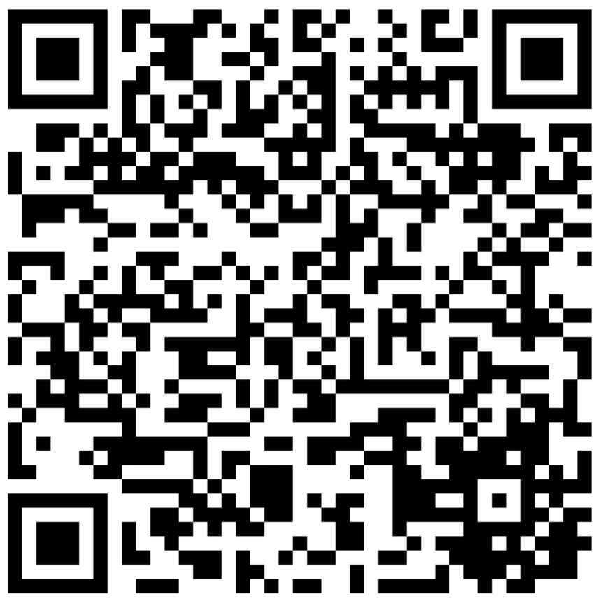

SCOPES-2027 Conference
SCOPES-2027 welcomes papers related to the conference tracks. (Please refer scope of the conference)
The following instructions should be followed to make a successful submission:
Please ensure pinned manuscript adheres to the specified length requirement of 4-6 pages with Abstract word count limit 150-250 words, following the IEEE Conference format guidelines. You can download the template from the provided link:
Note: Manuscripts that do not conform to the formatting guidelines will be removed from further consideration without review.
Ready to Submit
Your Paper?
Click the button below to open the Microsoft CMT submission portal for SCOPES 2027. Make sure your paper follows IEEE format before submitting.
Having issues? scopes2027@cutm.ac.in
Scan to Submit

Microsoft CMT Portal
The Microsoft CMT service was used for managing the peer-reviewing process for this conference. This service was provided for free by Microsoft and they bore all expenses, including costs for Azure cloud services as well as for software development and support.
Papers are reviewed on the basis that they do not contain plagiarized material and have not been submitted to any other conference at the same time (double submission).
Learn how to avoid plagiarism. IEEE defines plagiarism as the use of another's ideas, processes, results, or words without explicitly acknowledging the original author and source. Plagiarism in any form is unacceptable and is considered a serious breach of professional conduct, with potentially severe ethical and legal consequences (IEEE Publication Services and Products Board Operations Manual, Section 8.2.1.B.7).
Follow proper citation practices noted above to avoid plagiarism. All papers are checked for plagiarism before review process and the plagiarism should not exceed 30% (Including references.).